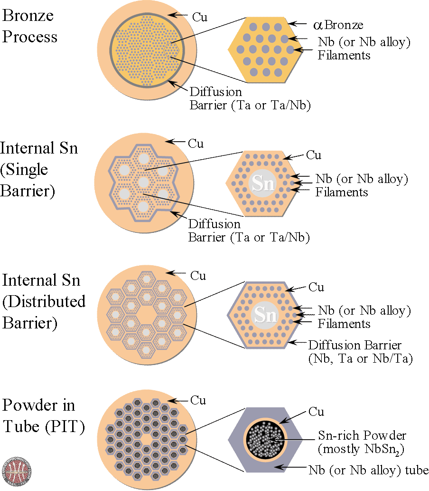

Niobium–tin is an intermetallic compound of niobium (Nb) and tin (Sn), used industrially as a type II superconductor. This intermetallic compound has a simple structure: A3B. It is more expensive than niobium-titanium (NbTi), but remains superconducting up to a magnetic flux density of 30 teslas [T] (300,000 G), compared to a limit of roughly 15 T for NbTi. Nb3Sn was discovered to be a superconductor in 1954. The material's ability to support high currents and magnetic fields was discovered in 1961 and started the era of large-scale applications of superconductivity. The critical temperature is 18.3 kelvins (−254.8 °C; −426.7 °F). Application temperatures are commonly around 4.2 K (−268.95 °C; −452.11 °F), the boiling point of liquid helium at atmospheric pressure. In April 2008 a record non-copper current density was claimed of 2,643 A mm−2 at 12 T and 4.2 K.

The fine-grain Nb3Sn fractions in PIT and TT subelements are only 40-
45%, so there is still plenty of room for improvement. One way to do so is to decrease the
coarse-grain Nb3Sn fraction by increasing the Cu/Sn ratio, as shown in Figure 9. However, it will
be seen that higher Cu/Sn ratio would cause negative impact on the
stoichiometry and Bc2 of Nb3Sn phase. The other way to increase Nb3Sn fraction in PIT and TT
wires is to reduce the unreacted Nb fraction under the permission of allowable RRR.
For more readings click here
| Fine grain Nb3Sn fraction | Bc2(T) | Grain-size | Fp(B)-peak | |
|---|---|---|---|---|
| Present best RRP | 60% | 25-27T | 125-150nm | ~0.2Bc2(T) |
| Present best PIT, TT | 40-45% | 25-27T | 100-150nm | ~0.2Bc2(T) |
| Limits or optimum | 65% | 28T | <5nm | ~0.5Bc2(T) |
We have demonstrated that adding 1Hf or 1Zr to Nb4Ta
greatly reduces the HIrr suppression encountered in Nb3Sn
wires made from Nb1Zr wires previously examined at OSU
and SupraMagnetics/FSU. The highest HIrr and the
best vortex pinning performance were obtained with a
Nb4Ta1Hf alloy without SnO2, which reached a maximum
pinning force more than twice that obtained with standard
Nb4Ta alloy and with slightly better HIrr. Initial evaluations of
the layer Jc lead to ~3700 ± 1100 A/mm2
at 16 T, 4.2 Kcorresponding to a non-Cu Jc of ~2200 ± 600 A/mm2in an
RRP architecture. These results indicate that the quickest
pathway to a high Jc for FCC conductor may be to avoid
internal oxidation and to just use the A15 grain refinement
properties of Hf or similar additions to Nb4Ta in either
internal-tin or PIT conductors.
Read this article to know more click here